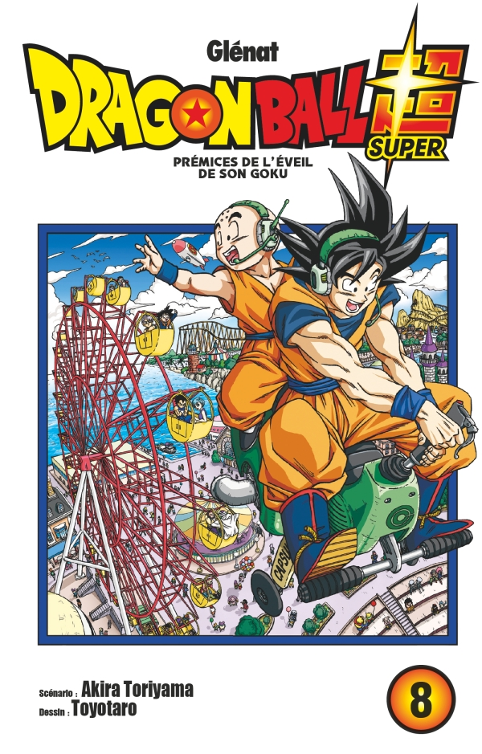

Tous les plus grands combattants des douze univers se sont réunis pour disputer le tournoi du plus fort. Mais lorsque Kale, une saiyanne de l’univers 6, se met à perdre la tête, elle élimine les autres participants les uns après les autres. L’équipe de Goku, celle de l’univers 7, ne compte plus que six guerriers. Vont-ils décrocher la victoire pour assurer la survie de leur univers ?!
Ch. 37 : Kale s'éveille au Super Saiyan
Ch. 38 : L’ultime recours de l'Univers 6
Ch. 39 : Prémices de l'éveil de Son Gokû
Ch. 40 : Jiren VS l’univers 7